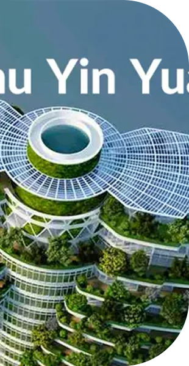

Innovación
28 Octubre 2025
Edificios que respiran como termiteros
Nuevos desarrollos en Asia demuestran cómo la arquitectura inspirada en termiteros puede reducir el consumo energético hasta un 90% mediante sistemas de ventilación pasiva y autorregulación térmica.
Leer más →